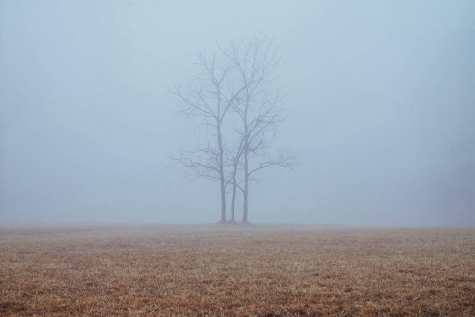
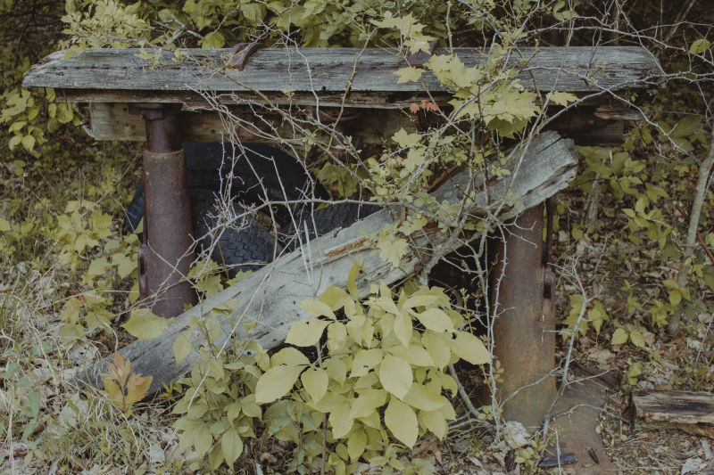
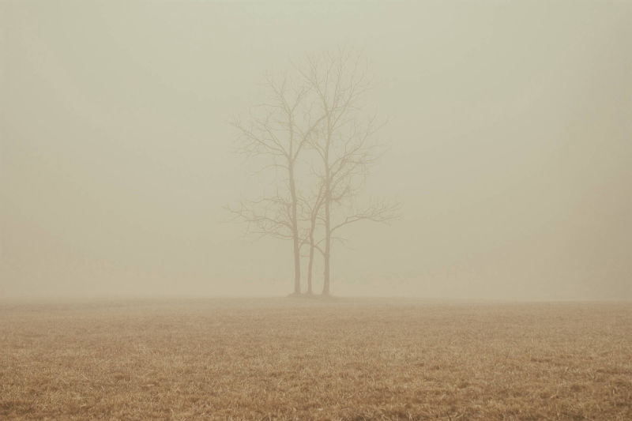
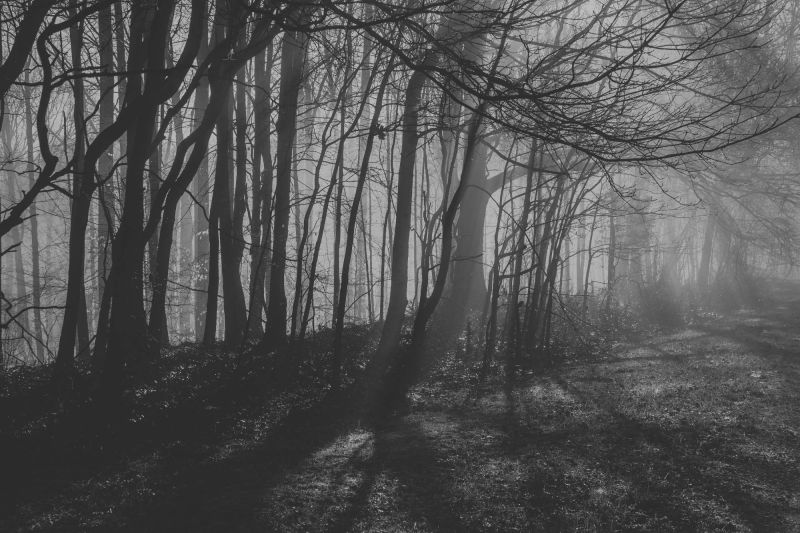

I'm an experienced Multimedia Producer/Director/Editor/VFX Artist/UAV Pilot with a demonstrated history of working in broadcast media, corporate video production, video marketing and feature films.
The Emmy award winning children’s television program produced by WTIU and broadcast on PBS stations across the Midwest. Encouraging children to learn about the world in fun ways for 20 years.
Roles: Audio Engineer, Video Shading
View Episodes
The WTIU/WFIU news team presents this weekly look at the headlines, events and stories that matter most. This Emmy award winning program is the place to turn to for the latest in-depth coverage.
Roles: Audio Engineer, Engineer in Charge
View Episodes
Join the search for unique art, music, food and culture with WTIU’s signature magazine style program. This Emmy award winning program explores and uncovers Indiana’s best.
Roles: Audio Engineer
View Episodes
WTIU has been providing the Midwest with quality public programming that aims to inspire, enrich and educate viewers of all types for half a century. Fund Drive campaigns are essential to the continued fulfillment of our community mission.
Roles: Audio Engineer
The Indiana University Media School produced program provides students with the opportunity to create a weekly news show for air on public broadcast channels.
Roles: Engineer in Charge, Video Shading
View Episodes
Stay up late, but Not Too Late for IUSTV’s highest rated show as host Tucker Scanlon invites you into the studio for a night filled with timely jokes, outrageous sketches and eclectic guests.
Roles: Engineer in Charge, Video Shading
View Episodes
Have breakfast in bed with this 2019 IASB winning morning show! Watch as our hosts engage with guests on topics such as local art, food and fashion.
Roles: Engineer in Charge, Video Shading
View Episodes
Score the latest top stories from the world of sports brought to you by the IUSTV sports team.
Roles: Engineer in Charge, Video Shading
View Episodes
A panel of rotating sports writers debate and discuss in-depth the important issues, figures and events in the world of local and professional athletics.
Roles: Engineer in Charge, Video Shading
View Episodes
Cut to the Chase with the newest addition and anchor leg of the IUSTV Sports Block. This bite-sized rundown of the headlines is the perfect counterpart to the Toss Up.
Roles: Engineer in Charge, Video Shading
View Episodes
Welcome to IUSTV’s long running news program. Watch the latest developments on the local and national stories that matter most.
Roles: Engineer in Charge, Video Shading
View Episodes
IUSTV’s news magazine program. Let our hosts fill you in on what’s up with current events, celebrity gossip and other human interest stories.
Roles: Engineer in Charge, Video Shading
View Episodes
The annual international leadership conference for Best Buddies, an organization dedicated to providing opportunity to those with intellectual and developmental disabilities. The conference includes speakers, awards programs and musical guests.
Roles: Audio Engineer
More Information
Live in-person studio workshops from media industry professionals. Guests discuss the state of the industry, breaking in, building a body of work and lessons they’ve learned along the way.
Roles: Engineer in Charge, Video Shading
View Events
Live in-studio concerts from rising artists of the Indiana University music scene brought to you by WIUX 99.1.
Roles: Engineer in Charge, Video Shading
View Events
Live coverage of Indiana University sporting events for in-stadium scoreboard shows, internet streaming or in conjunction with Big Ten Network broadcasts.
Roles: Audio Engineer, Video Shading
Live coverage on election night from the WTIU/WFIU news team. Coverage includes the latest vote counts, breaking news, in-studio guests and remote audio/video from campaign headquarters across the state.
Roles: Field Engineer
View Events
A feature film from the mind of writer/director Ryan Harrison. This Indiana set story is full of guns, babes, dragons and lots of ninjas.
Roles: Featured Performer
A film based on the 1933 short story by author Ernest Hemingway. Two waiters discuss an elderly patron who refuses to return home at closing time.
Roles: Head Gaffer
This Montage Film Festival award winner imagines everyday human interactions and adult relationships as a ballet, complete with elegant dance pieces.
Roles: Audio Engineer
Starring John Robert Armstrong of The Good Catholic. This is an honest look at a man coping with personal regret in public spaces as he faces his inevitiable end.
Roles: Extra Performer
This short film is a classic murder mystery set in the home of a famous playwright as he gathers his friends and collaborators for a table read of his new project.
Roles: Supporting Actor
Winner of the 2006 Multivisions award for Best Field Production. Detective Baxter retraces the events surrounding the loss of his partner Shultze.
Roles: Producer, Director, Writer